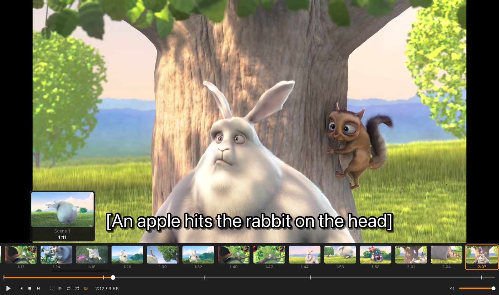
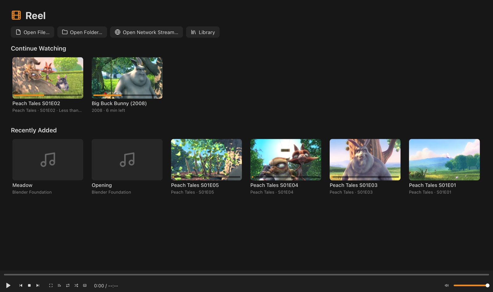
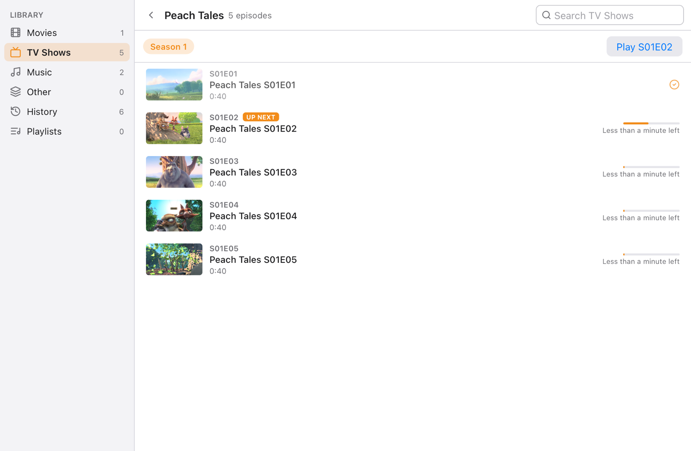
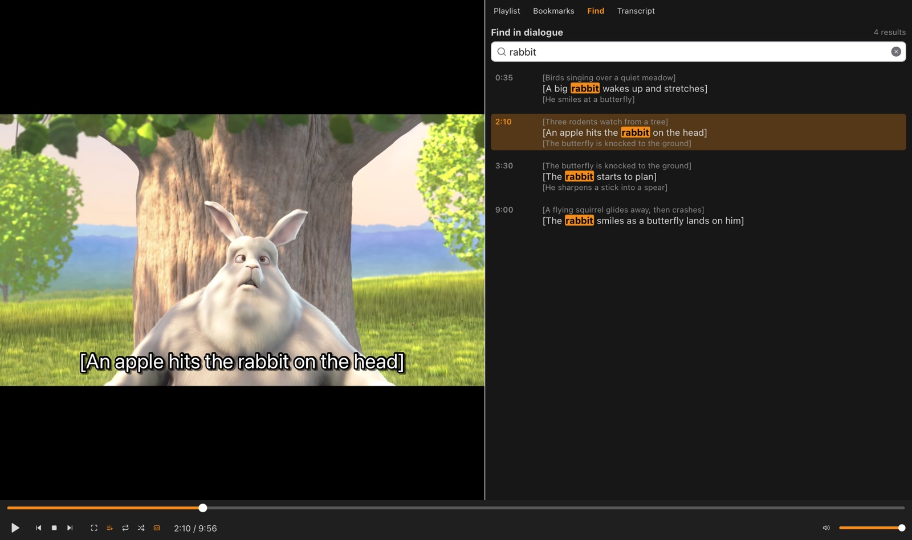
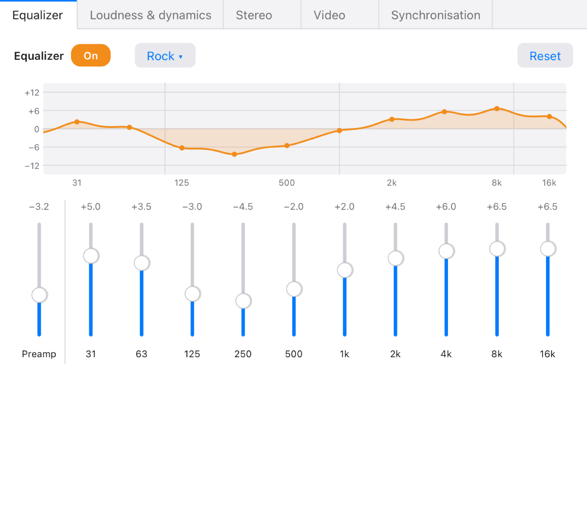
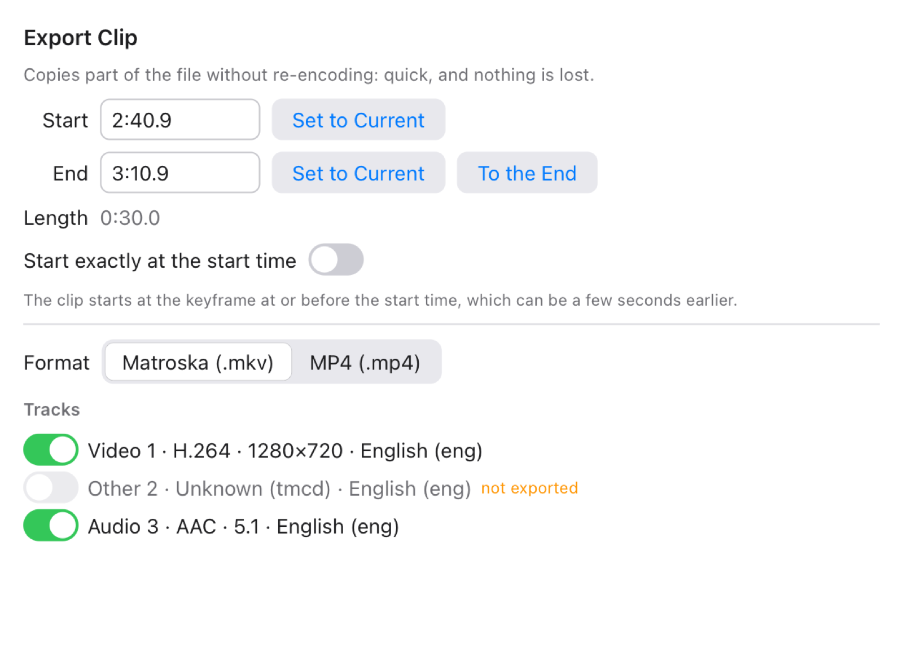

Reel guide
Everything Reel does, and where to find it. On Windows, read Ctrl wherever this guide says ⌘, and Alt for ⌥.
1. Getting started
macOS: open the disk image and drag Reel to Applications. Windows: run the installer; Reel goes in the Start menu.
To play something:
- Drop a video, song or folder on Reel's window, or open one with Media ▸ Open File… (⌘O) or Open Folder… (⇧⌘O). A folder plays all its media in order.
- Open video and audio files with Reel from Finder or Explorer (it registers for them).
- Paste a link with Media ▸ Open Network Stream… (⌘N): see YouTube and streams.
When nothing is playing, the window shows the home screen with what you were watching.
2. Playing

- Play and pause with Space. Jump back and forward 10 seconds with ← →, 3 seconds with ⇧← ⇧→, a minute with ⌥← ⌥→.
- Seek previews: hover over the seek bar to see the picture at that time, then click to go there.
- Scene strip (View ▸ Scene Strip): thumbnails of every scene; click one to jump to it. For files without chapters, the scenes also become chapters.
- Frame by frame: E or . steps forward one frame, ⇧E or , steps back.
- Jump to a time with ⌘T: type
1:23:45,83:45,45s, or+30/-1:00to move from where you are. - Speed: ] faster, [ slower, = normal, from 0.25× to 4×, with the pitch kept.
- Full screen with F (Esc to leave). The controls fade out after a moment and come back when you move the mouse.
- Audio and subtitle tracks: B cycles audio tracks, V subtitles; or pick one in the Audio and Subtitle menus.
- Playlist (⌘L): drag to reorder; N and P go to the next and previous item. Loop and shuffle are in the Playback menu.
- Mini player (⇧⌘M): a small window that stays out of the way.
3. YouTube and streams
Choose Media ▸ Open Network Stream… (⌘N), paste the address and press Open. If an address is on the clipboard, it's already filled in. Reel plays:
- YouTube videos:
youtube.com/watch?v=…,youtu.be/…, Shorts, live and embed links, and YouTube Music. The window shows the video's title. - HLS and DASH streams (
.m3u8,.mpd), including live ones. - Video and audio files on the web, and internet radio.
Reel starts at a quality that suits most connections. Change it in Video ▸ Quality.
YouTube changes how its videos are delivered from time to time. If YouTube links stop working, a newer version of Reel will fix it. Videos that need you to sign in (age-restricted or members-only) can't be played.
4. Downloading videos
Choose Media ▸ Download Video…. If a YouTube video or stream is playing, its link is filled in and looked up straight away; otherwise paste a link and press Find. Then:
- Pick the quality. The best one is chosen for you.
- Pick the format: MP4, Matroska (
.mkv), or Sound only (.m4a), which downloads just the audio. - Check where it's saved: your Downloads folder, named after the video. Choose… saves it elsewhere.
- Press Download. A bar shows how far it's got; Cancel stops it.
Nothing is re-encoded, so the file has exactly the quality of the stream. Live streams can't be downloaded.
Only download videos you have the right to keep: your own, ones under a licence that allows it, or ones the owner lets you save. YouTube's terms don't allow downloading other videos.
5. Library and home screen

Add your folders in Reel ▸ Preferences… ▸ Library. Reel sorts what it finds into Movies, TV Shows (by series and season), Music (by artist and album) and Other, and keeps your History and Playlists. Open the library with ⇧⌘L.
- Picking up where you left off: a file you were watching starts from the beginning, with a Continue from … button for a few seconds. The home screen's Continue watching row resumes directly.
- Episodes get watched marks and progress bars, and the next episode plays on its own at the end of one (⇧N skips to it).
- Reel remembers each file's tracks, volume, speed, delays, picture settings and equalizer.
- Right-click an item to play it next, add it to a playlist, mark it watched, or show it in Finder.
- Playlists open and save as M3U, PLS, XSPF, WPL and CUE.

6. Subtitles
- Reel loads subtitles inside the file and ones beside it: same name, language codes like
Movie.en.srt, andSubs/folders. All of them are listed in Subtitle ▸ Beside the Video. - Subtitle ▸ Add Subtitle File… loads any SRT, ASS/SSA, WebVTT or PGS file. Dropping one on the window works too.
- Second Subtitle Track shows another language at the top, for learning or for two viewers.
- Out of sync? H delays subtitles by 0.1 s, G brings them earlier.
- Garbled letters? Pick the right Text Encoding, or leave it on Detect Automatically.
- Change the font, size, colour and outline in Preferences ▸ Subtitles, with a live preview.
Find in dialogue and the transcript

⌘F searches every subtitle track for a word or phrase and lists each line with the ones around it; click one, or use the arrow keys and Enter, to go there. ⇧⌘T shows the whole transcript, which follows along as the film plays.
Downloading subtitles
Subtitle ▸ Download Subtitles… searches OpenSubtitles. It needs a free API key from opensubtitles.com, entered in Preferences ▸ OpenSubtitles, and a login for downloads. Results that match your file exactly are marked.
7. Sound and picture

Tools ▸ Effects and Filters (⌘E) has five tabs:
- Equalizer: ten bands with presets and a curve of what you've set.
- Loudness & dynamics: normalisation that evens out quiet dialogue and loud scenes, a compressor and a limiter.
- Stereo: mono, swapped channels, width, balance and headphone crossfeed.
- Video: brightness, contrast, saturation, hue and gamma; crop (with black-bar detection), aspect ratio, zoom, flip and rotate; deinterlacing, sharpening and denoising.
- Synchronisation: audio delay (J/K in 50 ms steps), subtitle delays and speed.
Changes to the sound are heard after a second or two.
8. Bookmarks, loops and chapters
- Bookmarks: ⌘B marks the moment; ⇧. and ⇧, go to the next and previous one. View ▸ Bookmarks lists, renames and deletes them.
- A-B loop: press L at the start, again at the end, and the part between repeats. Press it a third time to stop.
- Chapters: ⇧⌘→ and ⇧⌘←, or Playback ▸ Chapter.
- Sleep timer (⌥S): stop after 15 to 90 minutes, at the end of what's playing, or after a time you choose.
9. Clips, GIFs and snapshots

- Media ▸ Export Clip… (⇧⌘E) saves part of a file as MKV or MP4 without re-encoding: set the start and end (or use an A-B loop), choose the tracks, and export. Turn on Start exactly at the start time to cut on the exact frame.
- Media ▸ Export GIF… makes a GIF of a few seconds, at the width and frame rate you choose.
- Video ▸ Snapshot (⇧⌘S) saves the current picture.
10. DVDs and Blu-rays
Media ▸ Open Disc… opens a DVD or Blu-ray folder, or an .iso image. Reel lists
the titles with their length, chapters, angles and languages, and marks the main feature. Encrypted
commercial discs aren't supported.
11. Keyboard shortcuts
Every shortcut can be changed in Preferences ▸ Shortcuts: click an action, press the new keys, and Reel warns about clashes.
| Action | Keys |
|---|---|
| Playback | |
| Play / Pause | Space |
| Stop | S |
| Next / Previous item | N · P |
| Next episode | ⇧N |
| Jump 10 s | → ← |
| Jump 3 s | ⇧→ ⇧← |
| Jump 1 min | ⌥→ ⌥← |
| Next / Previous frame | E or . · ⇧E or , |
| Jump to time | ⌘T |
| Next / Previous chapter | ⇧⌘→ · ⇧⌘← |
| Faster / Slower / Normal speed | ] · [ · = |
| A-B loop | L |
| Add bookmark | ⌘B |
| Next / Previous bookmark | ⇧. · ⇧, |
| Sleep timer | ⌥S |
| Sound | |
| Volume up / down | ↑ · ↓ |
| Mute | M |
| Next audio track | B |
| Audio delay +50 ms / −50 ms | K · J |
| Picture | |
| Full screen / Leave | F · Esc |
| Snapshot | ⇧⌘S |
| Subtitles | |
| Next subtitle track / second track | V · ⇧V |
| Subtitle delay +0.1 s / −0.1 s | H · G |
| Find in dialogue | ⌘F |
| Transcript | ⇧⌘T |
| Media and windows | |
| Open file / folder | ⌘O · ⇧⌘O |
| Open network stream | ⌘N |
| Close | ⌘W |
| Export clip | ⇧⌘E |
| Media information | I or ⌘I |
| Playlist / Library | ⌘L · ⇧⌘L |
| Effects and filters | ⌘E |
| Mini player | ⇧⌘M |
| Preferences | ⌘, |
12. Settings and help
- Reel ▸ Preferences… (⌘,) has General, Playback, Audio, Video, Subtitles, Library, Network, OpenSubtitles and Shortcuts.
- Tools ▸ Media Information (I) shows each track's codec, the file's metadata and chapters. Tools ▸ Statistics shows decoding speed and dropped frames as the video plays.
- Reel ▸ Send Anonymous Usage Statistics turns the usage counts off. The privacy page says exactly what they contain.
- A file won't play, or something looks wrong? Report it with the file's Media Information on GitHub.